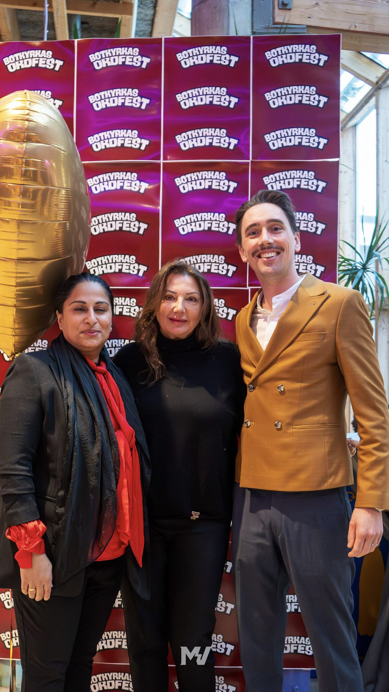

Om Botkyrkas Ordfest
Vilka är vi?
Botkyrkas Ordfest är ett läsfrämjande projekt som drivs av föreningen Banbrytarna.
Genom författarbesök, skrivtävlingar och kulturaktiviteter skapar vi mötesplatser där unga får utveckla sitt språk, sin kreativitet och sitt självförtroende.
Projektet är politiskt och religiöst obundet och har en stark lokal förankring i Botkyrka.


Vårt syfte
Vi vill…
- Öka läslusten bland barn och unga
- Stärka ungas skrivande och kreativitet
- Ge unga röster plats att höras
- Skapa möten mellan elever, författare och kulturaktörer
Föreningen bakom
Banbrytarna
Banbrytarna är en läsfrämjande förening som skapar litterära mötesplatser för barn och unga. Vi inspirerar barn och unga att utforska litteraturen, skapar glädje i läsning och skrivande och ger unga en plattform att uttrycka sig kreativt.
Visionen är ett samhälle där läsning, skrivande och berättande inspirerar människor i alla åldrar att delta i kultur- och litteraturlivet.